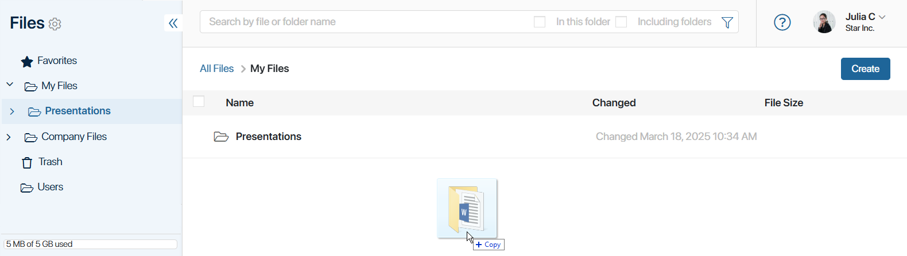

В разделе Файлы можно:
- загружать папки с файлами;
- загружать файлы различных форматов;
- добавлять ссылки на элементы приложений;
- создавать веб-документы для оформления страниц в папках раздела.
Обратите внимание, общий объём диска для хранения объектов в разделе Файлы и количество свободного места зависит от поставки ELMA365 и тарифного плана, с которым она лицензирована. В ELMA365 SaaS посмотреть остаток места на диске и увеличить его объём можно в разделе Администрирование > Управление лицензиями. Подробнее читайте в статье «Управление свободным местом».
Добавить папку с файлами
Вы можете перетащить с компьютера одну или несколько папок с файлами. При этом вложенные папки тоже загрузятся в систему.

Добавить новый файл
Есть несколько способов добавить новый файл на диск:
- Загрузить файл с компьютера:
- в правом верхнем углу страницы папки нажмите Создать и в выпадающем списке выберите Загрузить файл. В открывшемся окне вы можете выбрать несколько файлов для загрузки;

- в пустой папке нажмите на ссылку файл или перетащите в неё файл с компьютера. Можно выбрать несколько файлов.

- Создать копию файла из сессии, чата, канала, ассоциированной ленты.
Вы можете сохранить файлы, добавленные при переписке в сессиях и чатах, а также в комментариях в каналах или ассоциированных лентах задач и элементов приложений. Для этого наведите курсор на файл, а затем нажмите значок  . В открывшемся окне выберите папку, в которой будет сохранён документ, и нажмите Создать.
. В открывшемся окне выберите папку, в которой будет сохранён документ, и нажмите Создать.

- Создать копию документа из поля типа Файлы.
Вы можете сохранять документы, добавленные в карточки элементов приложений и задач с помощью поля типа Файлы. Для этого нажмите на файл и откройте его в режиме просмотра. В правом верхнем углу страницы нажмите на три точки и выберите пункт Создать копию. В открывшемся окне укажите папку, в которой будет сохранён документ, и нажмите Создать.

- Открыть вложение из входящего или исходящего письма.
Если в разделе Почта вы подключили электронный адрес к встроенному почтовому клиенту ELMA365, в раздел Файлы добавится папка Вложения. При открытии вложений в письмах они будут сохраняться в эту папку. При удалении письма с вложением из почтового сервиса, файлы также будут удаляться.

- Добавить файл по проекту.
Для каждого нового проекта в разделе Файлы > Файлы компании > Проекты создаётся отдельная папка. В неё автоматически сохраняются документы, добавленные в карточке проекта.

Добавить ссылку на элемент приложения
В разделе можно создавать не только файлы, но и ссылки на элементы приложений, в которых хранятся необходимые для работы данные. Сделать это можно двумя способами: создать новый элемент приложения либо добавить ссылку на уже существующий. По сформированным ссылкам вы сможете быстро открыть карточку элемента, не переходя в приложение. Например, в папке Договоры наряду с файлами можно хранить ссылки на элементы с информацией о контрагентах.
Чтобы создать ссылку на элемент приложения:
- Перейдите в папку в разделе Файлы, в которой вы хотите отображать ссылку на элемент.
- Нажмите кнопку Создать и выберите опцию Элемент приложения.
- В открывшемся окне укажите приложение системы.
- Далее вы можете:
- выбрать существующий элемент приложения;
- добавить новый элемент. Для этого нажмите кнопку Создать новый и заполните форму данными.
- Нажмите Сохранить.
Ссылка на элемент появится в заданной папке. Она отображается для всех пользователей, у которых есть права доступа на просмотр папки. Однако открыть карточку элемента смогут только те, у кого есть права доступа к данным приложения.
Вы можете:
- удалить ссылку на элемент из папки, наведя курсор на название элемента и нажав значок корзины. Элемент останется доступен в приложении, в котором он создан;
- переместить ссылку на элемент в другую папку. Для этого наведите курсор на его название, нажмите значок и выберите нужную папку;
- отметить одновременно несколько ссылок, чтобы удалить их или переместить в другую папку. Массовые действия с ссылками выполняются так же, как и с файлами;
- отобразить в карточке элемента список всех папок, в которых хранятся ссылки на него. Для этого на форме приложения разместите виджет Список директорий со ссылками на приложение. С его помощью можно перемещать существующие ссылки на элемент между папками, удалять их, а также добавлять новую запись о нём в выбранную папку.
Создать веб-документ
Веб-документ — это файл формата .web365, который используется для моделирования рабочего пространства в разделе Файлы. Вы можете добавить в него любой текст, видео или изображение. Веб-документ создаётся в специальном встроенном редакторе. При сохранении документа его содержимое преобразуется в HTML-разметку. Затем его можно разместить на странице раздела Файлы, внутри определённой папки.
Таким образом на странице папки можно отобразить инструкцию по работе с файлами, ссылки на полезные данные, изображения или видеоматериалы и другую информацию.
Чтобы создать веб-документ:
- Перейдите в любую папку в разделе Файлы.
- Нажмите кнопку Создать и выберите опцию Веб-документ.
- В открывшемся окне настройте содержимое веб-документа. В встроенном редакторе вы можете форматировать текст, создавать маркированные и нумерованные списки, изменять цвет шрифта и фона, отменять действия, добавлять ссылки, изображения и HTML‑шаблоны текста. Кнопки для быстрого форматирования текста расположены на верхней панели.

- Вы можете изменить папку, в которой сохранится веб-документ. Для этого в поле Расположение нажмите на значок карандаша.
- Сохраните файл.
После создания веб-документа добавьте его содержимое на страницу папки. Для этого в списке доступных действий с папкой выберите опцию Связать с веб-документом. В открывшемся окне укажите веб-документ и определите его расположение на странице папки: над или под списком файлов. Сохраните изменения.

Созданный веб-документ можно разместить на странице одной папки. Чтобы удалить содержимое документа со страницы, в списке доступных действий с папкой выберите Связать с веб-документом, нажмите Открепить и сохраните изменения. Подробнее читайте в статье «Действия с папками».